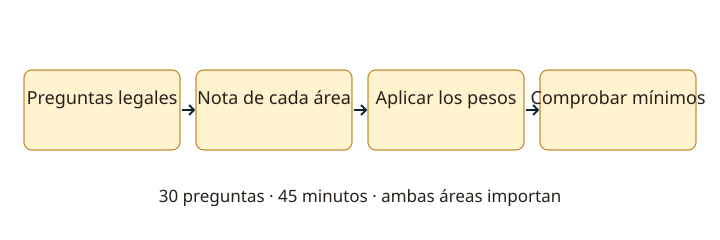

Lección 1 de 16
Reglamentación, licencias y examen
Comprende qué autoriza tu licencia, cómo identificarte y cómo se evalúa el examen. Esta materia es común a las cuatro categorías.
La licencia y la estación
El servicio permite la intercomunicación y experimentación personal sin fines de lucro. La licencia autoriza a una persona a instalar y operar según su categoría; contiene sus bandas, tipos de estación, indicativo y vencimiento. El permiso de una estación y la licencia del operador cumplen funciones distintas. Una radio desbloqueada o un registro en una plataforma digital no amplían esas facultades. Las licencias tienen una vigencia de cinco años; la renovación debe tramitarse en las condiciones del reglamento.
El camino entre categorías
Aspirante exige ser mayor de 10 años y aprobar los conocimientos correspondientes. Novicio exige ser mayor de 12 y un año como Aspirante, o seis meses con capacitación técnica del radio club que reúna las condiciones reglamentarias. General exige ser mayor de 15 y tres años como Novicio. Superior exige ser mayor de 18, cinco años como General y acreditar una actuación destacada, además del examen. Los menores requieren la representación o autorización prevista en el trámite. Aprobar preguntas de una categoría no reemplaza la edad, antigüedad ni los antecedentes exigidos.

Operar con identificación y respeto
Anuncia el distintivo completo al comenzar, al terminar y en intervalos no mayores de quince minutos. En una estación ajena se anuncia el distintivo de esa estación seguido del propio. El titular debe velar por que los transmisores sean usados por personas con licencia idónea. Escucha antes de llamar, usa la potencia y banda permitidas y considera todo el ancho de la emisión. Evita interferencias perjudiciales; no basta con que la frecuencia central esté dentro de banda.
Qué mensajes se permiten
No se permite transmitir música, publicidad comercial ni cursar mensajes a cambio de recompensa material, aun en emergencias. Tampoco deben encubrirse mensajes; el reglamento contempla excepciones específicas de comando. Los modos digitales no son, por sí mismos, cifrado para ocultar el contenido. Las comunicaciones de emergencia siguen las disposiciones aplicables: una situación difícil no convierte cualquier frecuencia o equipo en una autorización general. Distingue estación fija, móvil, repetidora y radiofaro, y las responsabilidades de su titular.
Examen: cuenta y ponderación son cosas distintas
La Resolución Exenta 2620/2023 regula el examen por Internet, de 45 minutos y 30 preguntas. Aspirante tiene 18 legales y 12 técnicas, con pesos de 70% y 30%; Novicio, 15 y 15, con 50% y 50%; General, 12 y 18, con 30% y 70%; Superior, 6 y 24, con 20% y 80%. Se necesitan al menos 60% ponderado y 50% en cada área en la misma oportunidad. Se solicita durante el mes anterior, con los antecedentes y credenciales del Portal de Trámites; la inscripción no es automática al usar este curso.
Cómo usar las preguntas antiguas
El banco publicado por SUBTEL tiene versión 06/12/2020. Estudia sus enunciados y el reglamento, pero usa la norma de examen de 2023 para el procedimiento actual: derogó la de 2007 que aún aparece citada en algunos documentos. Las disposiciones complementarias sobre bandas, distintivos, repetidoras y radio clubes también forman parte de la preparación. Revisa las preguntas reglamentarias de abajo; cada una conserva su referencia y clave oficial. Ante una diferencia documental, distingue la respuesta histórica del banco de la regla vigente.
Bandas y potencias: relaciona la categoría con la estación
Resumen de los artículos 9, 11, 13 y 15 del Decreto 523. Son límites a la entrada de la línea de alimentación de antena; no potencias de audio ni de consumo. Las bandas indicadas por su frecuencia de referencia deben usarse dentro de los segmentos atribuidos y autorizados, con todo el ancho de emisión dentro de ellos.
| Categoría | HF | VHF | UHF |
|---|---|---|---|
| Aspirante | Fija: 100 W PEP en 3,5 / 7 / 28 MHz. No se contempla móvil HF. | Fija o móvil: 50 W en 144 MHz. | No contemplada para esta categoría. |
| Novicio | Fija: 200 W PEP; móvil: 50 W PEP. Bandas de 3,5 / 7 / 10 / 28 MHz. | Fija o móvil: 50 W en 50 / 144 / 220 MHz. | Fija o móvil: 25 W hasta 1.270 MHz; 10 W en 2.400 y 5.650 MHz. Bandas de 430 / 1.270 / 2.400 / 5.650 MHz. |
| General y Superior | Fija: 1.200 W PEP; móvil: 200 W PEP, bajo 30 MHz. | Fija: 100 W; móvil: 50 W. | Fija: 50 W y móvil: 25 W hasta 1.270 MHz; 10 W sobre 1.270 MHz. |
General y Superior pueden operar las bandas atribuidas al servicio; la facultad experimental temporal del artículo 9 e corresponde a Superior. Los Aspirantes menores de 15 años requieren compañía y supervisión de Novicio, General o Superior para instalar y operar en HF. Revisa tu licencia y permiso antes de transmitir.
Organizaciones, distintivos y responsabilidades
Los prefijos ordinarios por categoría son CD (Aspirante), CA (Novicio), CE (General) y XQ (Superior); los especiales requieren asignación de SUBTEL. Un círculo debe reunir al menos diez socios con licencia vigente, uno como mínimo General o Superior. Un radio club reconocido necesita personalidad jurídica sin fines de lucro y el registro reglamentario de treinta socios: al menos quince Novicio o Aspirante y cinco General o Superior, con las excepciones fundadas que permite el reglamento. Pertenecer a una organización no es obligatorio.
Las repetidoras atendidas y no atendidas tienen condiciones y responsables distintos; las no atendidas y radiofaros solo pueden instalarlos las organizaciones contempladas en el reglamento. Las redes de emergencia se organizan conforme a los requerimientos de las autoridades y restringen el tráfico a esa situación. SUBTEL regula y fiscaliza; el reglamento atribuye al Ministro la aplicación de sanciones por su procedimiento, con notificación y posibilidad de defensa. Para el examen, distingue autoridad fiscalizadora, titular responsable y autoridad sancionadora.
Las solicitudes de renovación se presentan al menos noventa días antes del vencimiento, conforme al artículo 17; allí también se regula la vigencia mientras se tramita una solicitud oportuna y el caso de quien deja vencer ese plazo. Un permiso internacional depende de los convenios y facultades equivalentes: no transforma automáticamente una licencia en autorización mundial sin condiciones.
Resuelve paso a paso
Dos resultados con 18 aciertos
Aspirante: 12/18 legales = 66,67%; 6/12 técnicas = 50%. Nota: 0,7 × 66,67 + 0,3 × 50 = 61,67%: cumple los mínimos del simulacro. Con 9/18 y 9/12 también hay 18 aciertos, pero la nota es 57,5% y no cumple.
El mínimo por área importa
Acertar las 18 legales y ninguna técnica da 70% ponderado en Aspirante. Aun así, no cumple: técnica queda bajo 50%. Estudia ambas áreas.
Comprueba lo aprendido: ¿Identificarte cada quince minutos reemplaza el anuncio al inicio y al final?
No. Son obligaciones complementarias: inicio, final e intervalos máximos de quince minutos.
Preguntas oficiales de este tema
Estudia los enunciados y figuras sin salir de RUFCOM. Intenta responder antes de abrir la clave. Las incidencias documentales se indican y quedan fuera de la práctica calificada.
Continúa tu recorrido
Fuentes de estudio: programas técnicos y banco SUBTEL, apéndices A–E, versión 06/12/2020, y sus solucionarios oficiales. Reglamentación: Decreto 523, versión 21/06/2013; evaluación: Resolución Exenta 2620/2023. Revisión documental: 11/11/2026. Explicaciones, cálculos y esquemas didácticos de RUFCOM. Consultar documentos oficiales.